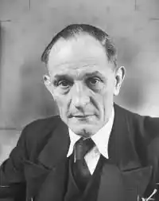

Народився в сім'ї пастора. 1900 року сім'я переїхала в Ельберфельд (зараз входить до складу міста Вупперталь). Навчався в евангелістичній гімназії, яку закінчив з відзнакою 1910 року. Вступив до Імператорських військово-морських сил; до і під час Першої світової війни служив на флоті, пішов добровольцем служити на підводних човнах. Старший лейтенант (Oberleutnant zur See), нагороджений Залізним хрестом 2-го та 1-го класу. 1917 року підводний човен, де служив Німеллер, перевозив з Дакару інтернованих німецьких громадян, серед яких був майбутній нобелівський лауреат Альберт Швейцер, з яким Мартін Німеллер згодом потоваришував і після 1945 року вони спільно закликали до ядерного роззброєння.
1919 року одружився з Ельзою Бремер (нім. Else Bremer). Вона народилася 20 липня 1890 року в Ельберфельді, а загинула 7 серпня 1961 року внаслідок ДТП у Данії.
Після Першої світової Мартін Німеллер вирішив стати священиком. 1934 року видав книгу спогадів "Від підводного човна до амвона" (нім. Vom U-Boot zur Kanzel), яка розійшлася накладом понад 90 тисяч примірників. Заарештований 1 липня 1937, переведений до Моабітської в'язниці в Берліні. Судовий процес закінчився 2 березня 1938 року виправдувальним вироком, однак це не задовольнило Адольфа Гітлера, який наказав запроторити Німеллера до концентраційного табору Заксенгаузен. Упродовж 1938–1945 роках перебував у таборах Заксенгаузен і Дахау. У квітні 1945 року групу ув'язнених, серед яких перебував і Німеллер, транспортували з Баварії (де знаходився Дахау) до Тіроля для фізичного знищення. Їх звільнили американські війська. Мартін Німеллер повернувся до церковної діяльності. Він виступав за перебудову Церкви, був обраний заступником голови Євангелічної церкви Німеччини. Ініціатор і підписант "Штуттґартської декларації вини" 19 жовтня 1945 року, в якій ЄЦН визнає свою провину за недостатній спротив нацизму в період Третього Райху. Учасник засідання Всесвітньої ради церков у Женеві 1946 року, а 1948 року взяв участь у Генеральній асамблеї Всесвітньої ради церков в Амстердамі. 1946 року розпочав активну міжнародну діяльність, провів тур із лекціями по США. Розпочав діалог між сторонами Холодної війни. У повоєнні роки перебував з візитами в Данії, Норвегії, Швеції, Англії, Ірландії, Австралії, Новій Зеландії. 1951 року виступав з лекціями в НДР і Югославії, а наступного року на запрошення патріарха Московського і всієї Русі Алексія I відвідав Радянський Союз. У 1950-х також бував в Індії, Чехословаччині, Польщі, зустрічався з німецькими та закордонними політиками (Конрад Аденауер, Джавахарлал Неру), виступав за відмову від ядерної зброї. 1965 року в Північному В'єтнамі проводив зустріч із Хо Ші Міном.